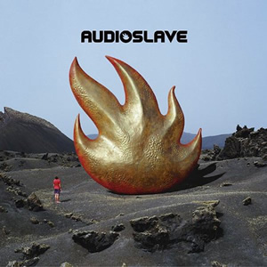

প্রচ্ছদকাহিনী :
পরম্পরা :
উৎসব :
song - গীত :
আনুষঙ্গিক :
চিত্রকলা :
ট্রেভেলগ :
স্বাস্থ্য :
অন্তরে অন্দরে :

তারপর থেকে স্টর্মের কাজ আর থেমে থাকেনি। কিংবদন্তী এই স্থিরচিত্রেরস্থপতির খোঁজ পেয়ে প্রচ্ছদচিত্রের জন্য তাঁর কাছে ছুটে এসেছে ব্ল্যাকসাব্বাথ, স্করপিয়নস থেকে শুরু করে আজকের ড্রিম থিয়েটার, মেগাডেথ। সত্তরের দশক থেকে শুরু করে বিংশ শতাব্দী অবধি বিভিন্ন ব্যান্ড অ্যালবামের প্রচ্ছদচিত্র করে গেছেন স্টর্ম থর্গারসন। তার মধ্যে বিশেষভাবে উল্লেখযোগ্যকাজগুলো দেখে নিই নিচের লিস্টেঃ (বর্ণানুক্রমিকভাবে তালিকাভুক্ত)Audioslave- Audioslave (2002)
Black sabbath- Technical ecstasy (1976)
Dream theater- A change of seasons (1995)
Falling into infinity (1997)
Europe- Secret society (2006) Led zepplin-
Houses of the holy (1973) Presence (1976)
In through the out door (1979) Megadeth-

Rude awakening DVD (2002)
Pink Floyd- Atom heart mother (1970)
Dark side of the moon (1973)
Wish you were here (1975)
A momentary lapse of reason (1987)
The division bell (1994)
Pulse (1995)
Rainbow- Difficult to cure (1981)
Bent out of shape (1983)
scorpions- Lovedrive (1979)
Animal magnetism (1980)
এই তালিকায় পিংক ফ্লয়েডের শুধুমাত্র ছয়টি অ্যালবামের নাম দেয়া থাকলেও এগুলো ব্যাতিত আরও প্রায় দশটি অ্যালবামের প্রচ্ছদচিত্র স্টর্ম থর্গারসনেরই করা। অন্য সব শ্রোতা বাদ দিলেও অন্তত যারা পিংক ফ্লয়েড ভক্ত আছেন তাদের কাছে তাই স্টর্ম থর্গারসন একজন মূর্তিমান কিংবদন্তী হয়ে থাকবেন সারাজীবন। আমরা পিংক ফ্লয়েড, লেড জেপলিনের অ্যালবাম শুনেছি, মুগ্ধ হয়েছিঅ্যালবামের প্রচ্ছদ দেখে। অথচ স্টর্ম থর্গারসন থেকে গেছেন আড়ালেই। একটা মহান কিছু যখন ঘটে যায়, আমরা সবসময় তার কেন্দ্রবিন্দুটাই খুঁজি। ভুলে যাই ঐকেন্দ্রের আশেপাশেই নেপথ্যে থেকে যাওয়া মানুষগুলোকে। স্টর্ম থর্গারসন একজন এমনই নেপথ্যের মানুষ যিনি একটি ছবিতে ফুটিয়ে তুলতেন পুরো একটি অ্যালবাম। এবছরের ১৮ এপ্রিল আমরা এই নেপথ্যের কিংবদন্তীকে হারিয়েছি। তাঁর এই প্রস্থানথেকে ঠিকরে বেরুনো আবেগই হয়ত আমাদেরকে ভবিষ্যতে এসব নেপথ্যের মানুষগুলোকেচিনতে শেখাবে, কোন এক দিন হয়ত আক্ষরিক অর্থেই সম্মানিত হবেন নিভৃতে থাকা সব কিংবদন্তী।
পৃষ্ঠা নং - ১ ২